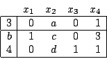
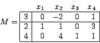
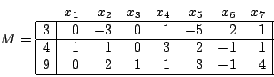
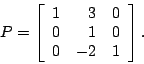
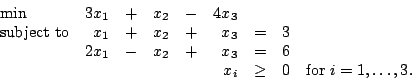
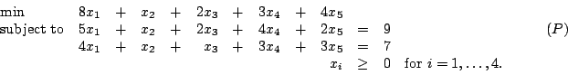
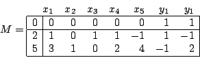

First Exam, Friday, October 8, 2004.
You may use any result from your notes or a homework that is clearly stated.
You may use one sheet of handwritten notes, but no other sources.
The exam consists of five questions, and lasts one hundred and ten minutes.
- 1.
- (30 points)
The Tall Tree lumber company owns 95,000 acres of forestland in the Pacific northwest,
at least 50,000 of which must be aerially sprayed for insects this year.
Up to 40,000 acres could be handled by planes based at Squawking Eagle,
and up to 30,000 acres could be handled from a more distant airstrip at Crooked Creek.
Flying time, pilots and materials together cost $3 per acre when spraying from Squawking
Eagle and $5 per acre when handled from Crooked Creek.
Tall Tree seeks a minimum cost spraying plan.
- (a)
- (8 points)
Formulate a mathematical programming model
to select an optimal spraying plan using decision variables
x1 := thousands of acres sprayed from Squawking Eagle
and x2 := thousands of acres sprayed from Crooked Creek.
- (b)
- (8 points)
Using a two-dimensional plot, solve your model graphically for an optimal spraying plan,
and explain why it is unique.
- (c)
- (7 points)
Put your model into standard form.
- (d)
- (7 points)
On your two-dimensional plot, label each constraint as v=0 for the appropriate
variable v in the standard form.
- 2.
- (25 points. No partial credit.
Each of parts (a)-(e) is worth 4 points, consisting of one point for
each of a, b, c, and d.)
Consider the following tableau for a standard form linear program:

- (a)
- For what value(s) of a, b, c, d is this problem in optimal form?
- (b)
- For what value(s) of a, b, c, d is this problem in unbounded form?
- (c)
- For what value(s) of a, b, c, d is this problem infeasible?
- (d)
- For what value(s) of a, b, c, d can we conclude from this tableau that
this problem is degenerate?
- (e)
- For what value(s) of a, b, c, d would x2 replace x1 in the basis?
- (f)
- (5 points) For what value(s) of a, b, c, d can we conclude from this tableau that
this problem has multiple optimal solutions? Consider the cases b>0 and b=0 separately.
- 3.
- (25 points)
- (a)
- Consider the following tableau for a standard form linear program:

- i.
- (5 points)
In the next simplex step, which nonbasic variable becomes
basic and which basic variable becomes nonbasic?
- ii.
- (5 points)
What is the simplex direction that you take from this tableau?
- iii.
- (5 points)
Let M1 denote the tableau arising after the simplex step.
Find the pivot matrix P such that M1=PM.
- (b)
- A standard form linear programming problem has tableau

The pivot matrix used for the next iteration is

- i.
- (5 points)
Calculate the resulting reduced costs and hence show that the new
tableau is not optimal.
- ii.
- (5 points)
Find the pivot matrix for the subsequent iteration.
- 4.
- (20 points)
- (a)
- (10 points)
Use the method of artificial variables to
find a basic feasible solution to the linear program

- (b)
- (10 points)
The optimal tableau for the artificial problem constructed when solving the
linear program

is

where y1 and y2 are the artificial variables.
Find an optimal solution to (P).
John E. Mitchell
2005-09-20